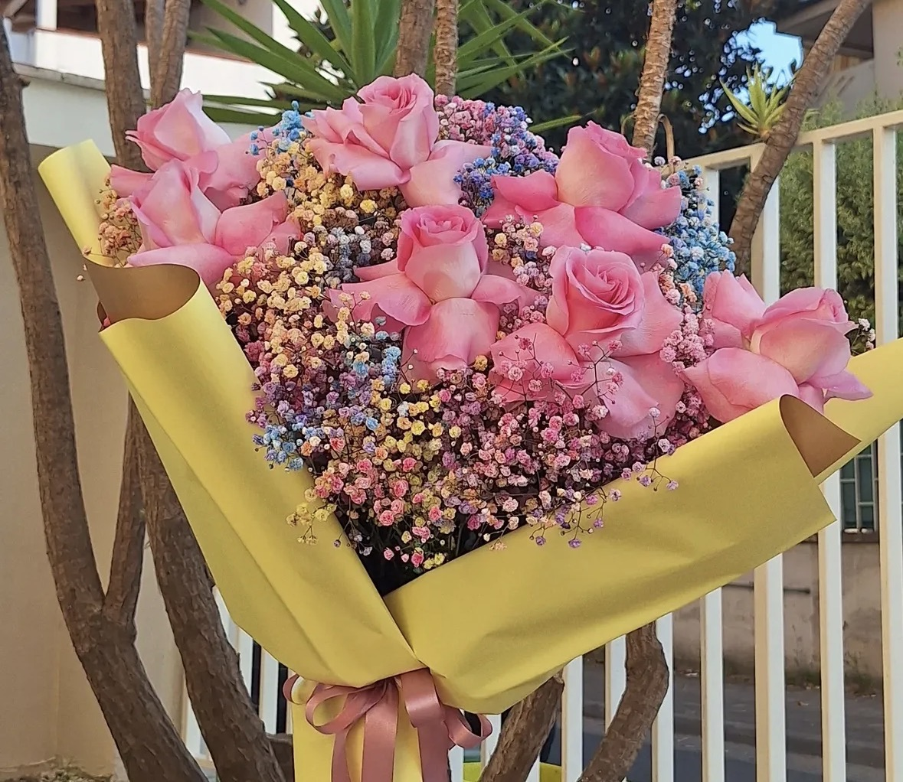
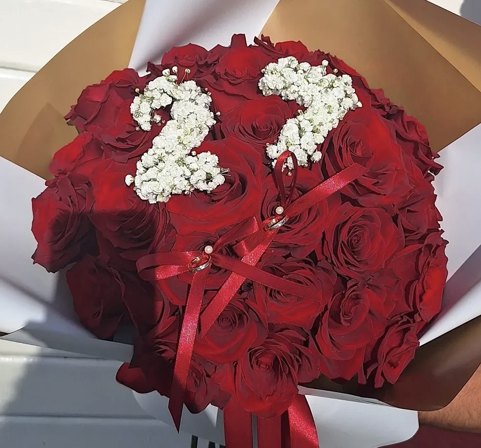

In questa sezione potrai scoprire il significato dei fiori più utilizzati nelle tue composizioni.




Scopri il linguaggio dei fiori e il loro simbolismo
In questa sezione potrai scoprire il significato dei fiori più utilizzati nelle tue composizioni.

